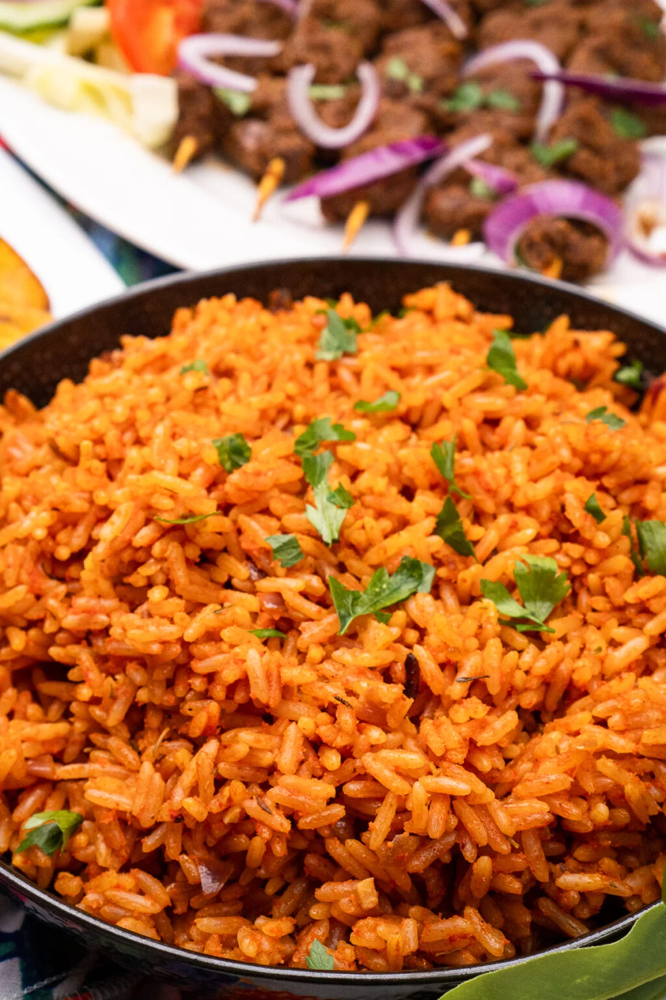

Jollof rice recipe

Description
Jollof, or jollof rice, is a rice dish from West Africa. The dish is typically made with long-grain rice, tomatoes, chilies, onions, spices, and sometimes other vegetables and/or meat in a single pot, although its ingredients and preparation methods vary across different regions.
Ingredients for 6 servings :
- 2 large yellow onions, roughly chopped
- ⅓ cup vegetable oil(80 mL), plus 2 tablespoons
- 14 oz diced tomato(395 g)
- 6 oz tomato paste(170 g)
- 1 habanero pepper
- 2 teaspoons curry powder
- 1 teaspoon garlic powder
- 1 teaspoon ground ginger
- ½ teaspoon mixed dried herbs
- 3 chicken bouillon cubes, crushed
- 2 ½ cups long grain rice(500 g), rinsed
- 1 cup frozen mixed vegetable(150 g)
- 1 ½ cups water(360 mL)
Preparation
- Add onions and 2 tablespoons of oil to a blender and pulse until smooth. Transfer to a medium bowl.
- Add the diced tomatoes, tomato paste, and habanero pepper to the blender, and pulse until smooth. Transfer to a separate medium bowl.
- Heat the remaining ⅓ cup (80 ml) of oil in a large, heavy-bottomed pot over medium heat.
- Once the oil is shimmering, add the onion puree and cook until the water has cooked out and the puree is starting to brown, about 10 minutes.
- Stir in the tomato puree and add the curry powder, garlic powder, ginger, dried herbs, and crushed bouillon cubes. Cook for 20-30 minutes, stirring occasionally, until the stew has reduced by half and is deep red in color.
- Add the rice, mixed vegetables, and water. Bring to a boil, then reduce the heat to low and cover the pot with foil and a lid. Simmer for another 30 minutes, until the rice is cooked through and the liquid is absorbed.
- Enjoy!
<
HOME
Lasagna recipe>